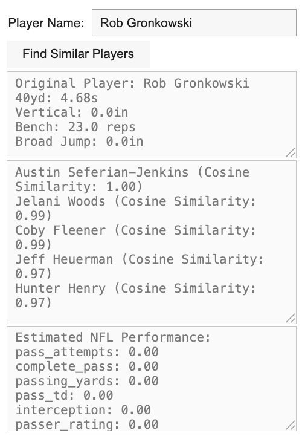
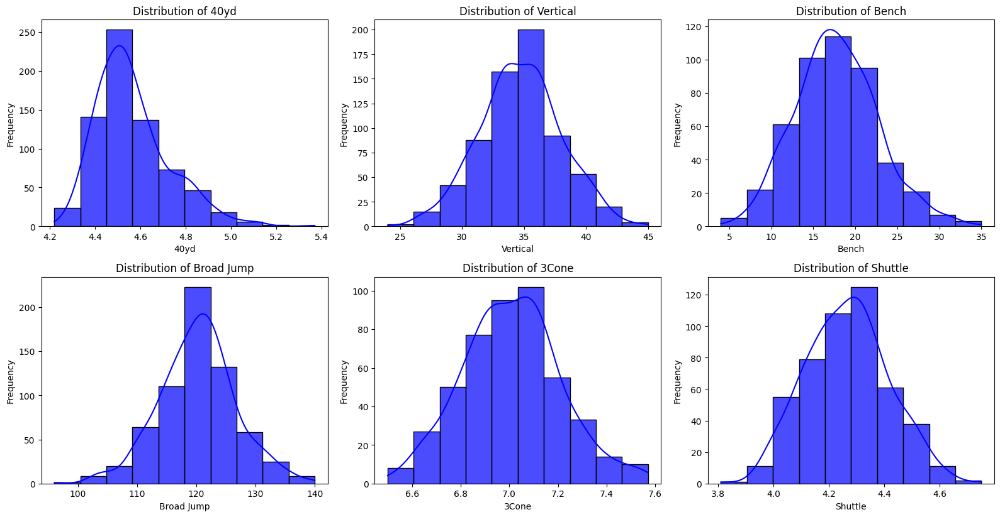
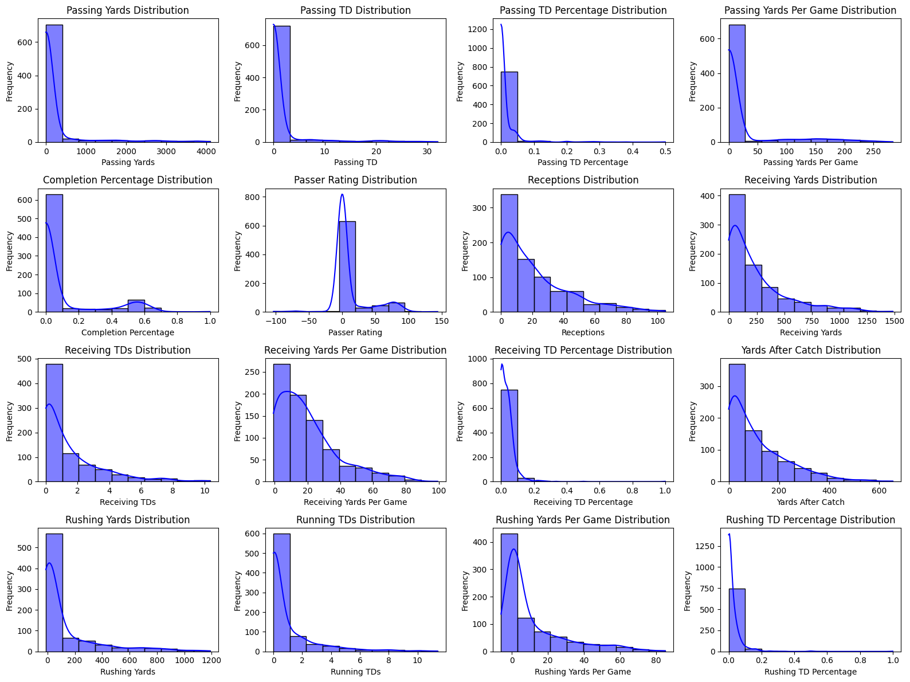
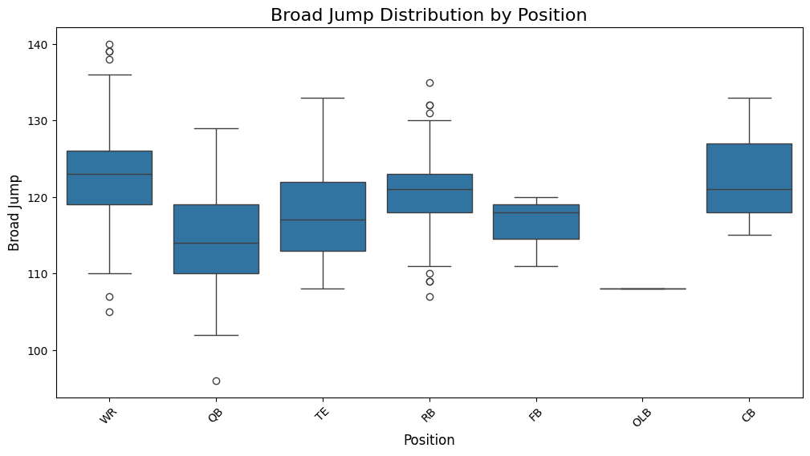
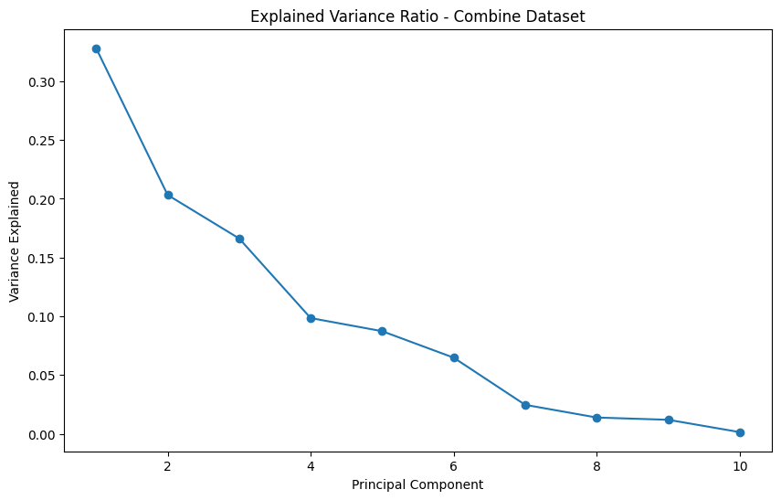

P03 / PROJECT
Data Mining & Machine Learning
This project uses data on NFL players' performance in the combine as well as their performance in the NFL in order to determine how similar certain players are to each other, using cosine similarity calculations. Data mining methods are used on the player's combine performance, which is then used to calculate similarities to current NFL players, and these similarities are used to predict the player's performance in the NFL.
View on GitHub →



